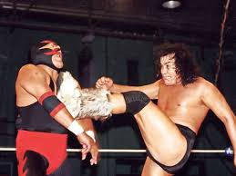

Nombre real: Pedro Aguayo Damián
Fecha de nacimiento: 18 de enero de 1946
Lugar de nacimiento: Nochistlán, Zacatecas, México
Alias: El Perro Aguayo
Famoso por su rudeza, entrega y carisma. Fue uno de los luchadores más populares en México durante décadas. Icono absoluto de la lucha clásica y querido por generaciones de aficionados.
Protagonizó luchas históricas en el CMLL, AAA y empresas de Japón y Estados Unidos. Fundador de los Perros del Mal. Luchó contra leyendas como El Santo, Mil Máscaras, Cien Caras y más.
Padre del también luchador Pedro Aguayo Ramírez, conocido como "El Hijo del Perro Aguayo". Considerado una leyenda del pancracio mexicano. Falleció el 3 de julio de 2019, dejando un legado imborrable.